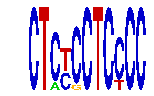

family_24 |
|---|
|  |
| Download PWM |
| Download instances (motifs) |
| Show motif distribution |
Query_ID | Query_Consensus | Subject_Name | Source_DB | Subject_ID | Length | Orientation | Offset | Divergence | Overlap | Subject_Consensus |
|---|---|---|---|---|---|---|---|---|---|---|
| family_24 | CTCTCCTCCCC | GGGTGGRR | JASPAR | PF0056 | 8 | reverse-complement | 7 | 0.282 | 4 | GGGTGGGG |
| family_24 | CTCTCCTCCCC | GGGAGGRR | JASPAR | PF0024 | 8 | reverse-complement | 7 | 0.296 | 4 | GGGAGGGG |
| family_24 | CTCTCCTCCCC | MECP2 | HOCOMOCO | MECP2_HUMAN.H10MO.C | 7 | reverse-complement | 7 | 0.787 | 4 | CCCGGAG |
| family_24 | CTCTCCTCCCC | ZN148 | HOCOMOCO | ZN148_HUMAN.H10MO.D | 15 | reverse-complement | 2 | 0.847 | 9 | NGNGNGGGGGNGGGG |
| family_24 | CTCTCCTCCCC | MZF1_1-4 | JASPAR | MA0056.1 | 6 | reverse-complement | 6 | 0.850 | 5 | NGGGGA |
Sequence | Start_position (from start) | Start_position (from end) | Average conservation | Best conservation score | Instance_with_best_CS | Best_Z-score | Instance_with_best_ZS | Strand |
|---|---|---|---|---|---|---|---|---|
| chr1:72873097-72874097 | 909 | 920 | 0.0193636 | 0.069 | CTMYCCTCCCC | 14.384416 | CTMYCCTCCCC | -1 |
| chr11:30165690-30166690 | 114 | 125 | 0.0406667 | 0.059 | CTCYSCTCCCC | 12.697084 | CTCYCCTCYCC | 1 |
| chr17:71368522-71369522 | 235 | 246 | 0.401182 | 0.766 | CTCYCCTCYCC | 14.051157 | CTCYSCTCCCC | 1 |
| chr14:25319634-25320634 | 879 | 890 | 0.121636 | 0.156 | CTMYCCTCCCC | 14.384416 | CTMYCCTCCCC | 1 |
| chr1:43252857-43253857 | 274 | 285 | 0.162182 | 0.59 | CTCYSCTCCCC | 12.697084 | CTCYCCTCYCC | -1 |
| chr10:76650149-76651149 | 407 | 418 | NA | NA | CTCYCCTCYCC | 12.697084 | CTCYCCTCYCC | -1 |
| chr5:77541031-77542031 | 434 | 445 | 0.00209091 | 0.009 | CTMYCCTCCCC | 14.384416 | CTMYCCTCCCC | -1 |
| chr11:21468789-21470752 | 828 | 839 | 0.717 | 0.988 | CTCYCCTCYCC | 14.384416 | CTMYCCTCCCC | -1 |
| chr9:25060245-25061245 | 941 | 952 | 0.992727 | 1 | CTCYCCTCYCC | 14.384416 | CTMYCCTCCCC | 1 |
| chr4:147360070-147361070 | 986 | 997 | 0.012 | 0.062 | CTMYCCTCCCC | 12.697084 | CTCYCCTCYCC | 1 |
| chr13:9386406-9387406 | 574 | 585 | 0.795545 | 0.845 | CTCYSCTCCCC | 14.051157 | CTCYSCTCCCC | 1 |
| chr11:98244950-98245950 | 349 | 360 | 0.00445455 | 0.012 | CTCYSCTCCCC | 14.051157 | CTCYSCTCCCC | 1 |
| chr7:148085594-148086594 | 462 | 473 | 0.00609091 | 0.021 | CTCYCCTCYCC | 12.697084 | CTCYCCTCYCC | 1 |
| chr14:55615723-55616723 | 179 | 190 | 0.589909 | 0.994 | CTCYCCTCYCC | 14.051157 | CTCYSCTCCCC | 1 |
| chr5:122552226-122553226 | 414 | 425 | 0.0111818 | 0.022 | CTCYSCTCCCC | 12.697084 | CTCYCCTCYCC | 1 |
| chr17:26987569-26988569 | 684 | 695 | 0.00354545 | 0.008 | CTCYCCTCYCC | 12.697084 | CTCYCCTCYCC | -1 |
| chr1:72991230-72992230 | 571 | 582 | 0.000363636 | 0.002 | CTCYCCTCYCC | 14.384416 | CTMYCCTCCCC | 1 |
| chr7:16897218-16898218 | 776 | 787 | 0.718636 | 0.785 | CTCYCCTCYCC | 14.051157 | CTCYSCTCCCC | 1 |